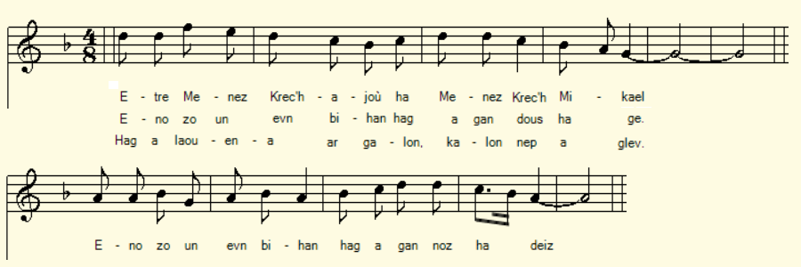
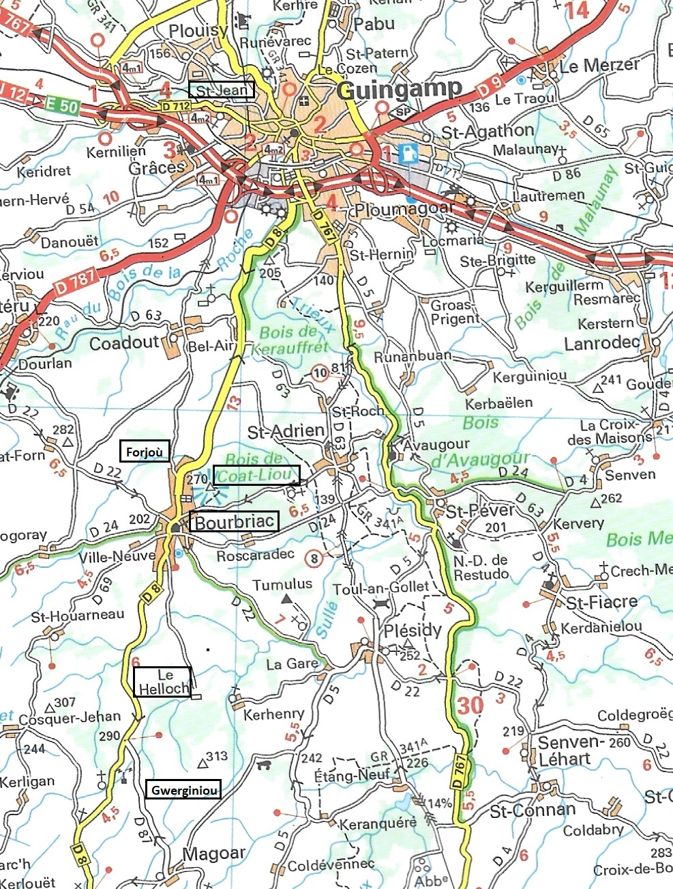
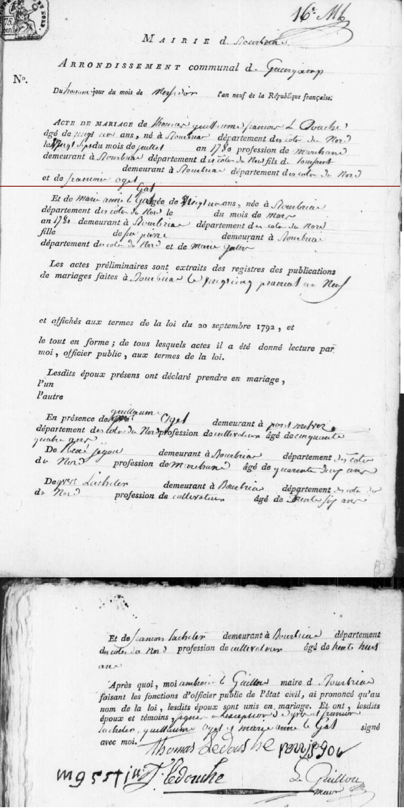

|
A propos de la mélodie Inconnue. L'évocation du "Menez Kreac'h Mikael" (Butte Saint-Michel) dans la 1ère strophe incite à choisir un des airs qui accompagnent le Pardon Sant Mikael (Malrieu M-1100). Mais la mélodie ci-dessus normalement assignée à la "Servante de Lannion" convient également pour des vers à 14 pieds comme dans le présent poème. A propos du texte La Villemarqué semble être le seul à avoir collecté ce chant. La strophe introductive lui confère une légèreté de ton qui contraste, par exemple avec celui de la gwerz k45 Margodig La Boissière, bien que le sujet soit le même, le "rapt de séduction": Une jeune fille aisée se laisse enlever par le prétedant de son choix pour forcer ses parents (en l'occurrence sa mère) à régulariser la situation et admettre la mésaliance. Ici, c'est le meunier du Helloc'h en Bourbriac qui fait les frais du traquenard ourdi par la jeune Marianne et son amoureux Thomas Le Doux. Quand il veut réagir, il est trop tard. . |
About the melody Unknown. The mention of "Menez Kreac'h Mikael" (Butte Saint-Michel) in the 1st stanza prompts us to chooe one of the tunes used as vehicle for the ballad Pardon Sant Mikael (Malrieu M -1100). However the above melody normally assigned to the "Maidservant of Lannion" is also suitable for 14-foot verses, as in the present poem. About the text Only La Villemarqué apparently has collected and recorded this song. The introductory stanza gives it a light tone that contrasts, for example with that of the gwerz k45 Margodig La Boissière , although the subject is the same: "Abduction by seduction": a wealthy young girl allows the suitor of her choice to kidnap her, so as to force her parents (in the song at hand, her mother) to regularize the situation and admit that she marries beneath her station. Here, it is the miller of Helloc'h near Bourbriac who bears the brunt of the trap hatched by young Marianne and her lover Thomas Le Doux. When he wants to react, it is too late. . |
|
p. 213 / 129 Son Tomaz An Dous 1. Etre Menez Kreajou ha Menez Krec'h Mikael [1] Eno zo un evnig bihan hag a gan dous ha ge Eno, zo un evnig bihan hag a gan noz ha deiz Hag a laouena ar galon, kalon an nep a glev. 2. Mari Gistin a lavare un nozvezh goude koan Dhe merc'hig Mariana ha d'he mabig yaouank : - Mar yet warc'hoazh da Wengamp, na savit-c'hwi beure mat, Evit tremen kent an deiz e-barzh ar vourc'h Boulvriag. 3. Tremenit en Boulvriag ha na rit ket a drouz, Gant aon na vioc'h klevet gant Tomazig An Douz! - Pa'n hi oa barzh Ar Gwengamp kimiad he-deus c'hoantet C'hoant dober un dro bale. Kimiad de(zh)e zo roet...[2] 4. Na 'trezek Plas an Amann, diouzhtu ema-hi aet. Ha 'gavas-hi Tomaz An Douz, hag he muiañ-karet. - Eurvat deoc'h Mariana, eurvad deoc'h a laran, D'eus a-belech e teuit, ha pelec'h ait bremañ? 5. - Me a zo 'tont d'eus ar ger hag a ya da Zant-Yann Pa m'eus sentet ouzh ma mamm, me a vezo divlam. - O, salokras, Mariana, da Zant Yann na it ket, Med war lost ma inkane ganin-me tefiet. 6. Deuit-c'hwi ganin, Mariana, war lost ma inkane! Me ho rento lec'h nep gare ken a vo noz feteiz. - Mariana a lare e lein Menez r Forjoù: - Me a garfe bout bremañ, na barzh Gwerginioù. - 7.Tomas An Dous a lare 'Toull Koad Liou Rannou: - Me garfe kaout ur c'hannadour dont da Wergi[nioù] Da laret da Vari Gistin en-em ranouz ket Rak he merc'h Mariana, vo fenoz goulennet. 8. - Deut on, davedoch, komaer, n'emaon daleet Kar ho merc'h Mariana vo fenoz goulennet. - Aotrou Doue, ma Doue, petra am-eus me graet? Me am-eus maget homañ, na timat minoret [3] Ha Mari hini bet ane(zh)e, ouzhin n'oa ket sentek! 9. Ha pa oa Pipi Ar Gall ' leuskel an dour dan traoñ Erruas ar channadour, ha gantañ ar c'heloù, Erruet ar c'hannadour da zegas ar c'heloù: Setu dime(z)et da vestrez, oa e Gwerginioù. - 10. Pipi Ar Gall pa glevas, a daolas e votoù Zo aet d'eus Vilin Helloc'h betek Gwerginioù. Mari Gistin p'he-deus gwelet,' n-em lakaas da ouelañ, - 'trou Doué, Pipi Ar Gall, diwezhad out amañ, Kollet eo ma merc'h koant, ha laeret vit an noz. - [4] = KLT gant Christian Souchon (c) 2020 |
p. 213 / 129 Chanson de Thomas Le Doux 1. Il est entre deux collines, Créajou et Saint-Michel Un oiseau qui fait entendre un chant doux comme le miel Cet oiseau chante sans cesse, chante la nuit, le jour, Et son chant réjouit l'âme.des passants à l'entour. 2. Marie Quistin, brave femme, disait après diner A sa fille Marianne, ainsi qu'à son garçonnet : - Quand vous irez à Guingamp, levez-vous de bon matin Pour traverser Bourbriac dès avant le jour, demain. 3. En traversant Bourbriac, enfants, pas de bruit surtout De peur que ne vous entende le sieur Thomas Le Doux! - A peine à Guingamp, Marianne aussitôt veut repartir Pour faire une promenade et on la laissa sortir. 4. Alors sur la Place-au-Beurre elle se rendit tout droit Son bienaimé Thomas Le Doux, ô surprise! était là. - Je vous salue, Marianne, je vous salue bien bas, D'où venez-vous donc la belle? Où courez-vous de ce pas? 5. - C'est de chez moi que j'arrive et je m'en vais à Saint-Jean Je n'encours aucun blâme d'obéir à ma maman. - Pardonnez-moi, Marianne, à Saint-Jean vous n'irez pas. Grimpez sur ma haquenée, avec moi défiez-la! 6. Montez en croupe, Marianne, sur mon fier destrier! Je vous rendrai ce soir-même au lieu qu'il faut m'indiquer - Marianne en montant aux Forges dit à Thomas Le Doux: - Je voudrais être à présent de retour à Guerguiniou. - 7. Thomas Le Doux, au Trou du Bois-Liou, dit à Rannou : Je voudrais t'envoyer en messsager à Guerguiniou: Que Marie-Quistin, la pauvre, ne se sente offusquée Pour ce soir-même sa fille en mariage est demandée." 8. - Je viens vers vous, ma commère, sans prendre de retard Votre fille en mariage est demandée pour ce soir. - Mon Dieu, qu'ai-je bien pu faire? Seigneur Dieu, qu'ai-je fait? Cette orpheline précoce, c'est moi qui la nourris Pourtant Marianne est la seule qui m'ait désobéi. - 9. Quand le meunier Le Gall Pierre lâchait l'eau du moulin, Voilà, porteur de nouvelles, qu'un messager survient, De fort mauvaises nouvelles, pas du tout à son goût: On avait fiancé sa promise de Guerguiniou! - 10. En entendant cela Pierre a jeté ses souliers. Du Moulin d'Helloc'h en hâte à Guerguiniou l'est allé. Marie Quistin à sa vue aussitôt fondit en pleurs - Te voilà mon pauvre Pierre. L'heure est bien avancée: J'avais une jolie fille, ce soir on l'a volée... - = Traduction Christian Souchon (c) 2020 |
p. 213/129 Song by Thomas Le Doux 1. There is between Créajou Hill and Saint-Michael's Knoll, A little bird that sings its fill of gay songs and sweet calls And this little warbler' singing every night and day, It rejoices anyone's heart who will come that way. 2. Marie Quistin said one evening after their dinner To her young son and to Marianne, her fair daughter: - Get up early, for to Guingamp you go tomorow, So as to cross before daylight Bourbriac borough. 3. But while going through Bourbriac, mind, no noise you make Lest Thomas Le Doux should hear you and he should awake- But once in Guingamp Marianne asked: "With your leave I would like to take a walk". Their assent they all gave 4. Towards Butter Market Place, now straight as an arrow, She headed, and she found her beloved Thomas Le Doux. - Good day to you, dear Marianne, O good day to you, Say, where are you coming from, where are you going to? 5. - I come from home and to Saint-John district now I go Who could blame me for obeying my mum as I do?. - With your leave, Marianne darling, it would be silly. You should ride my mare and you should challenge her with me! 6. Come and ride with me, dear Marianne, pilion on my mare! I will bring you back tonight to wherever they care .... - Marianne said, when they were later on Forges Hill - Now I will go back to Guerguiniou estate. I will - 7. Thomas said to Rannou, his friend, at Coat Liou Hollow: - I will send you as a messenger to Guerguiniou Tell Mary Quistin she ought not to grouch, but for her Daughter's hand I ask in marriage tonight, not later.. -. 8. - I came to your house, dear woman, and without delay: Tonight your daughter in marriage is asked: What d'you say?.- - My God, what did I do amiss, in that plight to be? I have fed for so long that girl orphaned quite early And she's the only one who refused to obey me ... - 9. While Pierre Le Gall was releasing water from his mill A messenger with news had come, rushing down the hill Rushing down the hill a messenger with news had come: His Guerguiniou betrothed was engaged to 'nother man . - 10. On hearing this Pierre Le Gall first away has thrown his shoes. Then he walked all the way from Helloc'h Mill to Guerguiniou. Mary Quistin as she saw him, she began to cry: - My God, Pierre Le Gall, you were too late, hasten as you might : My fair daughter she was stolen and lost for us tonight! - = Translated by Christian Souchon |
|
[1] Menez Kreajou: Cette strophe introductive avec son bucolique chant d'oiseau range clairement ce chant parmi les "sonioù", les chansons gaies et légères et traduit l'adhésion du barde aux manoeuvres qu'il s'apprête à relater. Cependant elle s'appuie, comme le ferait une gwerz sérieuse ou tragique, sur une onomastique et une topologie précises. A part les toponymes de l'introduction (qui diffèrent de ceux -"Lenn Montre..." et "Tre-Ar-Bradenn" cités dans le première strophe, par ailleurs identique, du chant malheureusement illisible de la p.140, Gwilhaou ha Marivon), tous ceux qui sont cités dans les autres strophes se rencontrent, sur une carte suffisament précise, à l'intérieur une bande étroite d'une vingtaine de kms de hauteur, allant de Guingamp au nord à Magoar au sud. (Cf. carte ci-contre). On peut tenir pour certain que ces événements sont réels et que les patronymes Quistin, Le Doux, Le Gall et Rannou correspondent , au moins phonétiquement, aux vrais noms des protagonistes. C'est ainsi que la revue "Pays d'Argoat" dont le n° 28 est consultable en ligne (http://bibliotheque.idbe-bzh.org /data/cle_82/Pays_dArgoat_nA_28.pdf, p 11/58) signale l'existence d'une meunière de Coatmaël (à 4 km à l'ouest de Magoar), à qui l'aventurière Marie Benjamin avait acheté un sac de farine avec un faux écu de 6 livres au carême de 1743 à Boubriac. Elle s'appelait, elle aussi, Marie Quistin. [2] Distances: On est étonné par l'endurance de nos ancêtres et, en l'occurrence, de l'héroïne Marianne. Le lieu-dit Guerguiniou (Gwerginiou) existe encore, à 8 km au sud de Bourbriac, soit à 21 km du centre de Guingamp. Nulle part il n'est question de voiture et elle aurait dû, semble-t-il, faire le même chemin en sens inverse dans la même journée! L'empressement avec lequel elle prend congé de ceux à qui elle confie son jeune frère permet de supputer qu'elle s'attendait à ce qui va suivre. Elle rencontre ("kavout" signifie le plus souvent "trouver ce que l'on cherche") .son ami de Boubriac, Thomas Ledoux qui peut-être tient boutique sur la "Place-au-Beurre" (Plas an Amann, str. 4) de Guingamp. C'est un nom qu'on ne retrouve pas sur les plans anciens consultables en ligne du site https://patrimoine-guingamp.net/plans-et-chronologies/ (Les amis du patrimoine de Guingamp). La Place Centrale de cette ville était occupée par une "cohue" (un marché couvert) et le côté nord s'appelait "Rue des Patissiers" (le sud étant le "Martray" où on exposait les condamnés). Peut-être la "Place au Beurre" de cette gwerz désigne-t-elle, la partie du marché réservée aux produits laitiers. Cette expression serait à l'origine de la Place-au-Beurre fameuse de Quimper. Le fiancé "officiel", le meunier Pierre Le Gall est bien moins méritant: le Moulin du Helloc'h et Guerguignou sont éloignés de quelques km seulement à vol d'oiseau, mais les chemins les plus courts ne sont peut-être pas praticables. Reste le parcours de Marianne et Thomas sur le cheval de ce dernier, qui les conduit de Guingamp jusqu'au Trou du Bois-Liou en passant par la côte des Forges, ces toponymes étant à proximité immédiate de Bourbriac. C'est un trajet d'une douzaine de kms, effectué dans des conditions bien moins pénibles: la haquenée ("inkane", str.5) de Thomas est un cheval allant l'amble (levant les deux jambes du même côté), recherché autrefois pour la douceur de ses réactions. [3] "Minoret": Sous l'Ancien Régime et jusqu'au 20 septembre 1792 , l'âge de la majorité matimoniale, en dessous duquel l'autorisation des parents était requise pour le mariage était de 25 ans tant pour les hommes que les femmes, en Bretagne tout au moins. Ailleurs les hommes devenaient majeurs à 30 ans! L'âge de la majorité sexuelle à partir duquel un mariage était possible était de 14 ans pour les hommes et 12 ans pour les femmes! La fameuse ordonnance de Villers-Cotterêts (1539) visait entre autre à mieux vérifier cette majorité: .Art. 51: "Aussi sera faict registre en forme de preuve des baptêmes... et par lextrait dudit registre, se pourra prouver le temps de majorité ou minorité et sera pleine foy à cette fin." Le Dictionnaire du Père Grégoire de Rostrenen (1732) glose les mots "mineur" et "mineure" (breton "minour" et "minourez") par "celui ou celle qui est en tutelle". Sous la Première République, par décret du 20 septembre 1792, l'âge de la majorité civile est abaissé à 21 ans pour les hommes comme pour les femmes. Ce décret faisait suite à celui du 28 août 1792 abolissant la puissance paternelle sur les majeurs. Le Code civil napoléonien (1804) fixe la majorité civile à 21 ans pour les femmes 25 ans pour les hommes. On comprend (str. 8) que son père étant décédé assez tôt , c'est la mère de la jeune fille qui exerce cette fonction de tutrice et que selon la date de cette histoire, Marianne qui a moins de 21 ou 25 ans, a besoin de l'autorisation de sa mère pour se marier. [4] Le "rapt de séduction" tel que celui que décrit la présente chanson n'était pas pris à la légère. En 1557, une ordonnance condamne à mort les coupables de tels rapts. La même année, selon un édit, les hommes âgés de moins de 30 ans et les femmes âgées de moins de 25 ans qui auraient contracté des unions clandestines peuvent être déshérités. En 1639, lédit de 1557 est répété. Bien qu'une publication de trois bans, la présence dun prêtre et de quatre témoins soient nécessaires, les mariages clandestins restent nombreux et de nombreux couples se contentent dun notaire ou dun curé complaisant pour entendre leur consentement. La nouvelle ordonnance vise à supprimer cette coutume. C'est bien entendu à ce genre de mariage que Marianne et Thomas menacent de recourir. Pour ne pas l'indisposer ( "ranouziñ"= devenir grognon), une "demande" (goulenn, str. 7 et 8) est adressée à la mère-tutrice, assortie d'un terme ("fenoz"", ce soir-même). Ce procédé est d'autant plus incongru que les demandes en mariage prennent, en Basse-Bretagne, la forme de cérémoniels très élaborés décrits dans les sonioù (cf. Ar Goulenn. Ce sont, curieusement, des simulations d'enlèvement! Marie Quistin a, bien évidemment, cédé au chantage et fait connaître son accord par l'intermédiaire du messager Rannou, puisqu'elle déclare à Pierre Le Gall qu'il arrive trop tard ("diwezhad out", str.10). [5] Vous avez dit "généalogie"?: M. Pierre-Yves Quémener, membre actif du Centre Généalogique et Historique du Poher m'avait conseillé de m'adresser aux spécialistes de la généalogie au sein de cette association, Christian Ison et son épouse Danièle, pour essayer de dater cette gwerz. La réponse ne s'est pas fait attendre. La base de données "Manne-Poher" du CGHP relative aux registres d'état civil tenus dans les paroisses, puis les mairies des communes de cette région ainsi que les puissants outils de recherche qu'ils ont mis en place leur a permis, en quelques heures de recueillir, sous forme de 10 fiches et 2 tableaux les précieuses informations ci-après: Il en est de même de la jeune mariée, Marie-Anne, fille de Marie Gestin (et non Quistin), veuve depuis le 9 mai 1797 de Pierre Le Gall. Née le 3 mars 1782 au Helloc'h en Bourbriac, Marie-Anne n'avait que 19 ans ! C'est pourquoi, comme on peut le constater sur l'extrait du registre de la Mairie de Bourbriac que M. et Mme Ison m'ont aimablement communiqué (cf. ci-contre), bien qu'ils ne soient pas mentionnés à l'acte, le père de Thomas, Toussaint Le Douche et la mère de Marie-Anne, Marie Gestin, ont tous deux signé, l'un d'une écriture impeccable, presque aussi belle que celle du maire, Ambroise Le Guillou, l'autre d'une main malhabile qu'on devine peu habituée à ce genre d'exercice. Le "rapt de séduction" a parfaitement atteint son but. Deux précautions valent mieux qu'une: l'officier d'état civil attribue généreusement à Thomas, l'âge de "vingt-un ans" et à Marie-Anne une date de naissance fantaisiste, le "mois de mars an 1780", ce qui fait d'elle une majeure de 21 ans et 3 mois. Autre irrégularité (me semble-t-il): les bans ("actes préliminaires") ont été publiés à Boubriac, le 25 Prairial an IX, 15 juin 1801, soit 8 jours auparavant. L'art. 63 du Code Civil prescrit actuellement un délai de 10 jours entre la publication des bans et la célébration du mariage et il ne semble pas quil y ait eu une évolution dans le sens d'un allongement de ce délai. Sous l'ancien régime les bans étaient publiés oralement, en chaire, trois dimanches successifs dans la paroissse de chaque époux. L'exclamation désabusée de Marie Gestin à la strophe 8: " Qu'ai je fait au bon Dieu? Je l'ai élévée, orpheline de père de bonne heure / Et Marie est parmi mes enfants celle qui ne m'a pas obéi." est justifiée en tout point! Ni la différence de niveaux d'instruction entre les époux, manifestée par leur habileté ou leur incapacité à signer leur acte de mariage; ni leur appartenance à deux classes sociales différentes, celle des marchands, à laquelle appartient le seul témoin capable de signer, René Jégou et celle des cultivateurs d'où sont issus les trois autres témoins (dont l'un porte le même nom que la mère de Thomas: Ogel); ni les irrégularités administratives qui entachaient leur union ne furent des obstacles au bonheur conjugal des nouveaux époux: Ils eurent une progéniture particulièrement nombreuse, 7 garçons et 5 filles , nés entre 1803 et 1820. Ils moururent l'un et l'autre à Bourbriac, Thomas Le Douche en 1850, agé de 71 ans et Marie-Anne, née Le Gall, deux ans plus tard, âgée de 70 ans. |
  |
[1] Menez Kreajou: This bucolic prologue which features a tweeting bird clearly allows us to rank this song among the "sonioù", the cheerful and light ditties and expresses the bard's approval of the events he is about to narrate. However, it is based, as would be a serious or tragic gwerz, on precise onomastic and topology. Apart from the toponyms of the prologue Apart from the toponyms of the introduction (which differ from those - "Lenn Montre ..." and "Tre-Ar-Bradenn" cited in the otherwise identical first stanza of the unfortunately illegible song on p.140 Gwilhaou ha Marivon ), all those quoted in the other stanzas will be found, on a sufficiently precise map, within a narrow strip of about twenty kms.in height, going from Guingamp in the north to Magoar in the south. (See map opposite). It is more than likely that these events are real and that the surnames Quistin, Le Doux, Le Gall and Rannou correspond, at least phonetically, to the genuine names of the protagonists. For instance the review "Pays d'Argoat" - whose release n ° 28 is available online (http://bibliotheque.idbe-bzh.org /data/cle_82/Pays_dArgoat_nA_28.pdf, p 11/58) - mentions a miller's woman living at Coatmaël (4 km west of Magoar), from whom the thief Marie Benjamin had bought a bag of flour for which she paid with a false crown coin of 6 pounds in Lent 1743 at Boubriac. Her name was Mary Quistin. [2] Distances : We are amazed by the endurance of our ancestors and, in this case, of the heroine Marianne. The place called Guerguiniou (Gwerginiou) still exists, 8 km south of Bourbriac, or 21 km from Guingamp town centre. Nowhere is there a mention of a car and she should have walked apparently the same way in the opposite direction on the same day! The eagerness with which she wants to take leave of those to whom she entrusts her younger brother prompts us to assume that she expects what will follow. She meets ("kavout" most often means "to find what one seeks"). her friend from Boubriac, Thomas Ledoux, possibly a butter monger on Guingamp's " Butter Market " ("Plas an Amann", in st. 4). This is a place name that does not appear on the old maps viewable online at https://patrimoine-guingamp.net/plans-et-chronologies/, The friends of Guingamp's heritage's site. The Midtown Square of this city was occupied by a "Cohue" (a market hall) and the north side was called " Rue des Patissiers " (Confectioners' street), the south being the "Martray" where convicts were pilloried. ). Perhaps the "Butter Market" of this gwerz refers to the part of the market reserved for dairy products. This expression would be at the origin of the famous "Place-au-Beurre" in Quimper. The "official" fiancé, miller Pierre Le Gall has much less merits than Marianne: Helloc'h Mill and Guerguignou are only a few km away as the crow flies, but the shorter paths may not be throughout practicable. Then there is the ride of Marianne and Thomas on the latter's horse, which leads them from Guingamp to Coat-Liou Hollow via Forges Hill, these toponyms being in the immediate vicinity of Bourbriac. It is a trip of a dozen kms, carried out in much less painful conditions, the "palfrey" ("inkane", str.5) of Thomas being a horse going ambling (raising both legs on the same side), appreciated for its smooth reactions. [3] "Minoret" : Under the Ancien Régime and until September 29, 1792, the age of matimonial majority, below which parental authorization was required for marriage was 25 years for both men and women, in Brittany at least. Elsewhere, men came of age at 30! The age of sexual majority from which marriage was possible was 14 for men and 12 for women! The famous Villers-Cotterêts ordinance (1539) aimed, among other things, to better check this majority age: Art. 51: "There will be made a record of baptisms to serve as a proof ... Extracts of said register shall faithfully attest the time of majority or minority." The Dictionary of Father Grégoire of Rostrenen (1732) glosses the word "minor" (Breton "minour" and "minourez") as "the one who is under guardianship". Under the First Republic, by decree of September 20, 1792, the age of civil majority was lowered to 21 years for both men and women. This decree was followed, on August 28, 1792, by another act abolishing parental power over adults. The Napoleonic Civil Code (1804) fixed the civil majority at 21 years for women and 25 years for men. We understand (str. 8) that the young girl's father having died quite early, it is Marianne's mother who is her guardian, and that Marianne, who is under 21 or 25 depending on the date of this story, needs her mother's permission to get married. [4] "Abduction by seduction" such as described in this song was not taken lightly by law enforcement. In 1557, a by-law condemned to death those guilty of such public crime. In the same year, pursuant to an edict, men under the age of 30 and women under the age of 25 who had entered into clandestine unions could be disinherited. In 1639, the edict of 1557 was repeated. Although the publication of three bans of marriage, and the attendance of a priest and four witnesses was made necessary, many clandestine marriages were held, the consent of many a couple being heard by a complacent notary or priest only. The new ordinance aimed at abolishing this custom. It is obviously this kind of marriage that Marianne and Thomas threatened to resort to. In order not to upset the girl's mother ("ranouziñ" = to become grumpy), a "request" ( goulenn , st. 7 and 8) was addressed to her, specifying a deadline ("fenoz" ", tonight). This process is all the more incongruous as marriage proposals took, especially in Lower Britain, the form of very elaborate ceremonies described in several sonioù (cf. Ar Goulenn ). They were, curiously, tantamount to simulated abductions! Marie Quistin has, of course, given in to blackmail and made her consent known through the intermediary of the messenger Rannou, since she declares to Pierre Le Gall that he is too late ("diwezhad out", str.10). [5] A bit of genealogy: Mr. Pierre-Yves Quémener, active member of the Genealogical and Historical Center of Poher had advised me to contact the specialists in genealogy within this association, Christian Ison and his wife Danièle, to ascribe a date to this gwerz. The answer was not long in coming. The CGHP "Manne-Poher" database relating to the civil status registers kept in the parishes of the Bourbriac area, then the town halls of the municipalities, as well as the powerful research tools that they have developed enabled them, in a jiffy to collect the invaluable below information in the form of 10 sheets and 2 tables: The same goes for the young bride, Marie-Anne , daughter of Marie Gestin (and not "Quistin"!), widow since May 9, 1797 of Pierre Le Gall . She was born March 3, 1782 at Helloc'h near Bourbriac, and was only 19 years old! This is why, as results from the extract of the register held at Bourbriac Town, kindly forwarded to me by M. and Mme Ison (see opposite), although they are not mentioned in the deed, both Thomas's father, Toussaint Le Douche and Marie-Anne's mother, Marie Gestin, widow of Le Gall, appended their signatures to it, the former in impeccable handwriting, almost as beautiful as that of mayor Ambroise Le Guillou, the latter with a clumsy hand that we guess little used to this kind of exertion. The "kidnapping of seduction" trick has perfectly achieved its goal. Two precautions being better than one: the record generously ascribes to Thomas the age of "twenty-one years" and to Marie-Anne a fake date of birth, the "month of March in the year 1780", making a pretence that she came of age three monts earlier. Maybe another irregularity: the banns (here referred to as "preliminary acts") were published in Boubriac, on 25 Prairial, year IX, or 15 June 1801, that is to say scarcely 8 days before. Art. 63 of the Civil Code currently prescribes a period of 10 days between the publication of the banns and the celebration of the marriage and it does not seem that there was a trend towards increasing this period. Before the Revolution, the banns were published orally, in church, three successive Sundays in the parish of each spouse. Marie Gestin's disillusioned exclamation in stanza 8: "What have I done to the good Lord? I raised Mary, orphaned at an early age / And she is among all my children the only one who failed to obey me. " is justified in every way! Neither the difference in education levels between bride and bridegroom, manifested by their ability or inability to sign their marriage certificate; nor their belonging to two different social classes, that of the merchants, to which the only witness able to sign, René Jégou, also belongs, and that of the farmers from whom the three other witnesses came (one of whom has the same name as Thomas' mother, Ogel); nor the administrative irregularities which stained their union were obstacles to the conjugal happiness of the new spouses: They had a particularly numerous offspring, 7 boys and 5 girls , born between 1803 and 1820. They both died in Bourbriac, Thomas Le Douche in 1850, aged 71 and Marie-Anne, née Le Gall, two years later, aged 70. |